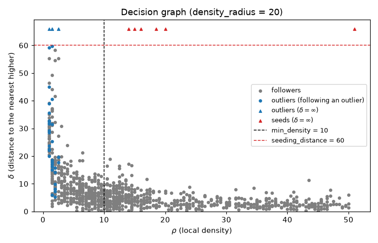

Tuning the Parameters with the Decision Graph¶
CLUEstering computes two quantities for each point:
the local density \(\rho\), the weighted sum of the neighbours within
density_radius;the distance \(\delta\) from the nearest higher, the closest point with a higher density.
The seeds of the clusters are the points with a high density, at least min_density, which are
far from any denser point, more than seeding_distance. The outliers are the points with a low
density that are far from any denser point, more than outlier_distance. All the other points
follow their nearest higher and end up in the same cluster.
The decision graph shows \(\delta\) against \(\rho\) for all the points, so the seeds stand out in the top right corner, the outliers in the top left, and the thresholds can be chosen by looking at where the points are.
Drawing the decision graph¶
After fitting the CLUEstering estimator, the densities and the distances are available in its
rho_ and delta_ attributes, and plot_decision_graph draws them:
import matplotlib.pyplot as plt
import pandas as pd
import CLUEstering as clue
df = pd.read_csv("data/sissa_1000.csv")
X, weights = df[["x", "y"]].to_numpy(), df["weight"].to_numpy()
est = clue.CLUEstering(density_radius=20., min_density=10.,
seeding_distance=60., outlier_distance=60.)
est.fit(X, sample_weight=weights)
clue.plot_decision_graph(est)
plt.show()

The dashed lines are the thresholds: min_density is the vertical line, seeding_distance
(and outlier_distance, when it is different) the horizontal ones. The function returns the
matplotlib Axes, and accepts ax to draw on existing axes and log_rho=True for a
logarithmic density axis.
Reading the graph¶
The nearest higher is searched only within seeding_distance for the points with a density of
at least min_density, and within outlier_distance for the others. The points without a
nearest higher within that distance have an infinite \(\delta\) and are drawn as triangles on
the top edge: these are all the seeds and the outliers.
The outliers drawn as dots have a nearest higher, but following the nearest highers from them ends in an outlier, so they are outliers too.
Choosing the parameters¶
Since \(\delta\) is cut at the search distances, the seeds always have an infinite \(\delta\) and the graph does not show how far they are from each other. To choose the parameters:
fit once with
seeding_distanceandoutlier_distancelarger than the expected values, so that \(\delta\) is cut as little as possible. This is slower, because the search is wider;choose
min_densityto separate the dense points from the sparse ones;choose
seeding_distancein the gap between the seeds on the top edge and the dense points below them.
In the example above all the points denser than min_density = 10 have \(\delta < 19\), so
any seeding_distance between about 20 and 60 finds the same six clusters, while a smaller value,
such as 15, splits them into twelve.
The densities depend on density_radius, so the graph is valid only for the value used in the
fit, which is shown in the title, and it has to be drawn again after changing it.
-
CLUEstering.plot_decision_graph(estimator, *, ax=
None, log_rho=False)[source]¶ Plot the decision graph of a fitted CLUEstering estimator.
Each point is drawn at its local density
rho_and at the distancedelta_from its nearest higher. The seeds are the points aboveseeding_distancewith a density of at leastmin_density, the outliers are the points aboveoutlier_distancewith a lower density. The dashed lines show these thresholds, so the graph helps choosingmin_densityandseeding_distance.The nearest higher is searched only within
seeding_distancefor the points with a density of at leastmin_density, and withinoutlier_distancefor the others. The points without a nearest higher in that distance, which include all the seeds, have an infinitedelta_and are drawn with triangles on the top edge. To see how far the seeds are from each other, fit once with largerseeding_distanceandoutlier_distance.The densities depend on
density_radius, so the graph has to be drawn again after changing it.Example:
est = clue.CLUEstering(density_radius=20., min_density=10.).fit(X) ax = clue.plot_decision_graph(est) ax.figure.savefig("decision_graph.png")